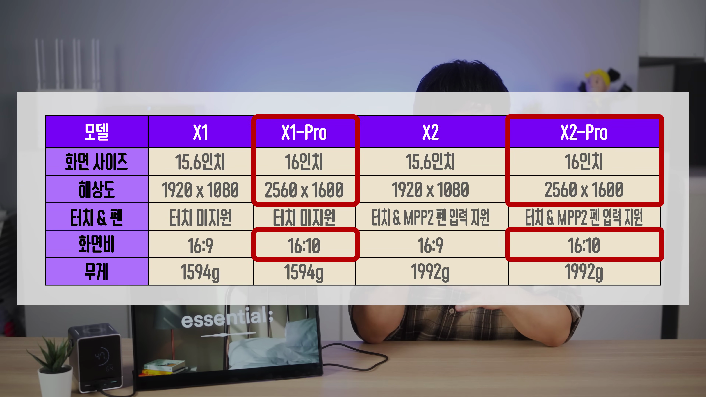

이번 블로그 포스트에서는 Ehomewei X2 프로 모델에 대한 자세한 리뷰를 다뤄보겠습니다. 이 제품은 듀얼 디스플레이 기능을 갖춘 휴대용 모니터로, 다양한 사용 용도와 장단점, 그리고 사용 방법에 대해 알아보겠습니다. 특히, 이 제품의 성능, 디자인, 구성품 등을 통해 독자 여러분이 제품 구매에 대한 세부 정보를 얻을 수 있도록 하겠습니다.

Ehomewei X2 프로 소개
- Ehomewei X2 프로는 두 개의 디스플레이를 연결하고 사용할 수 있는 제품입니다.
- 듀얼 디스플레이 구성으로 노트북을 확장할 수 있는 유용한 옵션입니다.
이번 리뷰에서 Ehomewei X2 프로 모델에 대해 알아보고, 제품의 장단점을 사용자 경험을 바탕으로 정리했습니다.

디자인과 기본 구성품
- 풀 알루미늄 하우징 및 통유리 커버로 견고함을 강조했다.
- 기본 구성품으로는 휴대용 파우치와 여러 케이블이 포함되어 있어 편리함이 증가했다.
디자인 측면에서 무게가 2.2kg로 꽤 무겁고, 고정된 킥스탠드가 있어 거치 시 안정적입니다.

디스플레이 사양 및 성능
- X2 프로 모델은 16인치 WQXGA 해상도를 지원한다.
- 색역은 P3 93%, 최대 밝기는 291nit로 실사용성은 뛰어나다.
전체적으로 높은 해상도와 색 정확도가 강조되며, 펜 입력 기능이 추가되어 다양성을 제공합니다.

연결 방법과 사용법
- USB-C 케이블로 간편하게 연결을 할 수 있다.
- 터치 및 펜 입력 기능이 지원되므로 다양한 작업에서 유용하다.
상단 및 하단 모니터를 각각 연결하고 설정하는 방법에 대해 상세히 설명하였습니다.

독립적인 사용 및 활용 방법
- 상하 모니터를 독립적으로 사용할 수 있어 작업 공간을 확장할 수 있다.
- 게임, 영상 편집 등 다양한 용도로 활용 가능하다.
Ehomewei X2 프로는 독립적인 사용이 가능하여, 다양한 장치들과 호환되는 유연함을 제공합니다.
Tags: #Ehomewei X2 프로 #듀얼 디스플레이 모니터 #휴대용 모니터 #제품 리뷰 #기술 리뷰 #노트북 액세서리